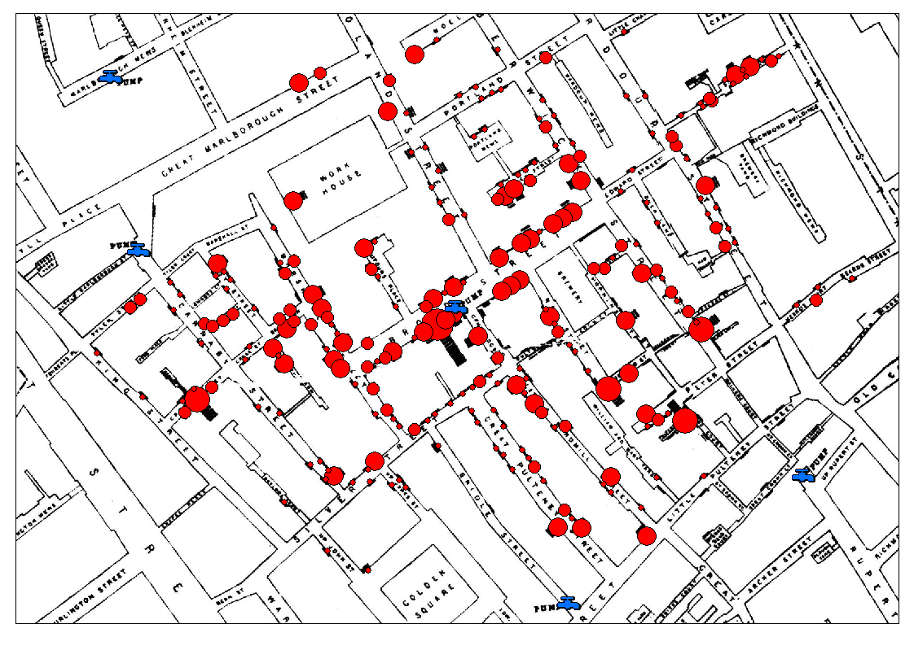

John Snow is viewed by many as a pioneer in disease mapping. For the 1854 cholera outbreak in London's Broad Street region, he presented two maps. The first was shown on December 4, 1854 at a meeting of the London Epidemiological Society. Several months later he published this map in his book, On the Mode of Communication of Cholera, 2nd Edition. He used bars to represent deaths that occurred at the specified households. There were several minor errors in this map which were later corrected
